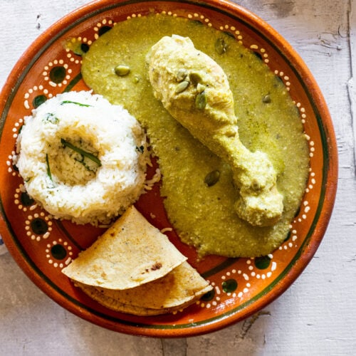

Pipian

Description
In Mexico it is a characteristic sauce of the typical cuisine of Morelos, Puebla, Tlaxcala, Zacatecas, Durango, Coahuila, Oaxaca and Mexico City.
It is made with pumpkin seeds, depending on the additional ingredients it can have red and green varieties. It is used for chicken, duck or pork dishes.
Ingredients
- 1 (3 pound) chicken, cut into parts
- 3 cups water
- 2 stalks celery
- 1 bay leaf, crumbled
- 1 onion, quartered
- 2 cloves garlic
- 2 teaspoons salt
- 2 teaspoons black pepper
Sauce
- ½ cup blanched almonds
- ⅔ cup sesame seeds
- 1 tablespoon extra virgin olive oil
- 2 teaspoons chicken bouillon
- 3 guero chile peppers, chopped
- 2 jalapeno peppers, chopped
- ⅓ cup pitted black olives
- 2 teaspoons capers
Steps
- In a large saucepan, combine chicken, water, celery, bay leaf, onion, and garlic. Season with salt and pepper. Cook until chicken is cooked through and tender.
- Strain, reserving the broth. Skin and bone the chicken; set the meat aside.
- Toast the sesame seeds lightly in a skillet, stirring constantly, until they are fragrant.
- In a food processor or blender, puree the sesame seeds and almonds with1 cup of the reserved chicken broth.
- Heat oil in a skillet over medium low heat. Add the blended sesame seed and almond mixture, and cook for 5 to 8 minutes, or until thickened.
- Stir in 1 to 2 cups reserved chicken broth and chicken bouillon. Simmer for 5 minutes. Stir in the chopped peppers, olives, capers, and chicken. Simmer for 10 minutes, and serve hot.